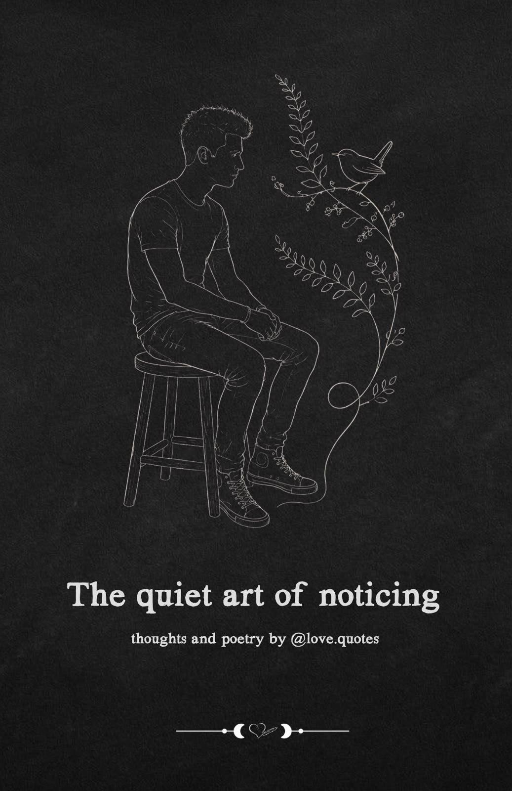

$12.90
The quiet art of noticing
For those who feel deeply and observe the world in silence.
“The quiet art of noticing” is a curated collection of poetry, thoughts, and intimate reflections born entirely from quiet observation and solitude.
Written for the subtle spectators of life – those who sit back, feel every shift in the air vividly, and perceive the small, invisible details that others often overlook – this book serves as a silent companion for sensitive minds.
It explores the spaces between words, the weight of unsaid things, the beauty of slowing down, and the quiet resilience found in healing. Each page is designed to feel like a conversation with your own thoughts, offering a gentle reminder that there is profound strength, hidden poetry, and art in simply paying attention to the world around you, and to yourself.
Whether you read it slowly before sleep or open it on a quiet afternoon when you need to feel understood, this collection is a place to land when your mind is full and your heart is listening.